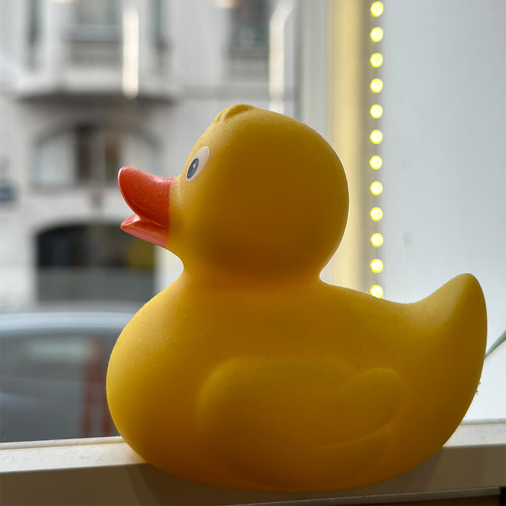

Способи використання каскадних таблиць стилів
- У цьому параграфі показано приклад рядкового елемента, з викорстанням inline-опису + стилізація з використанням властивсоті float
- Використання селекторів тегів, класів та ідентифікаторів
- Елемент з властивістю position
Цей текст обтікає зображення зліва завдяки властивості float. Зображення займає ліву позицію, що дозволяє тексту обтікати його з правого боку.
Цей текст підсвічено та виділено за допомогою стилю, заданого через селектор класу.
За тегом було отформатовано все тіло сторінки, наприклад шрифт та міжрядковий інтервал, а також пункт списку:
li{
padding: 10px;
font-weight: bold;
color:rgba(18, 46, 16, 0.753)
}
Ідентифікатор було використано щоб відформатувати кнопку "Перейти до контенту" у лівому верхньому куті. Саме ідентифікатор добре підходить, так як елемент такого типу один єдиний на сторінці
Вище вказаний елемент "Перейти до контенту" є зафіксованим за положенням, з вказівками цього самого положення. Було використано абсолютне позиціонування.
#navbar a {
text-decoration: none;
padding: 5px 10px;
position: fixed;
top: 10px;
left: 10px;
background-color: #353c5caf;
color: white;
padding: 5px;
}